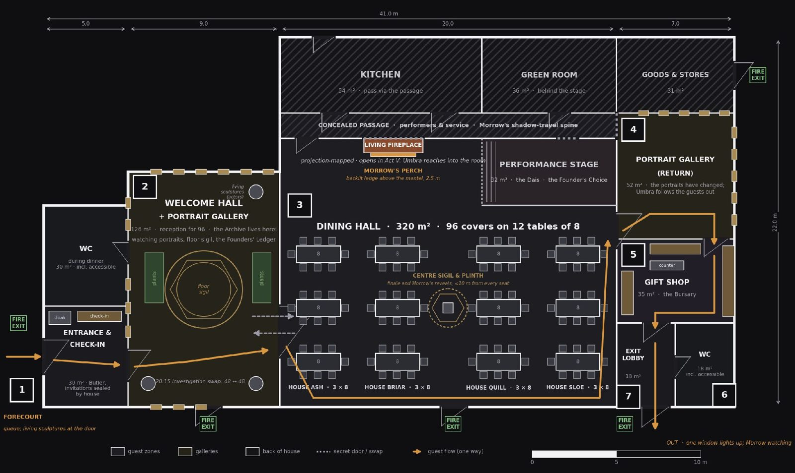
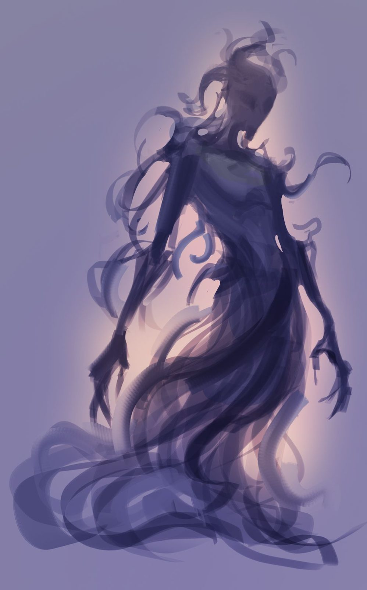
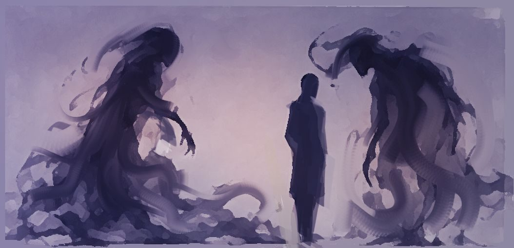

A Night at Thornwick
Immersive dining concept, Inky Lantern Studio

An immersive dinner in an old school of witchcraft: 96 guests, a seven-act story timed to the courses, a talking cat who travels through shadows, and something under the building that wakes up. Designed as a complete package: story, characters, zoned venue plan, guest flow, menu outline and physical effects.
- Client
- Original IP, seeking a venue partner
- Year
- 2026
- Status
- Concept, pitch-ready
- Role
- Author, concept and spatial design
- Delivered
- Story bible, concept art, venue sketch and plan, run of show, menu
Drawn by Julia Bilenko


(open full size)

(open full size)

(open full size)© 2026 Inky Lantern Studio. The full concept deck is available under NDA: ask for it by email.